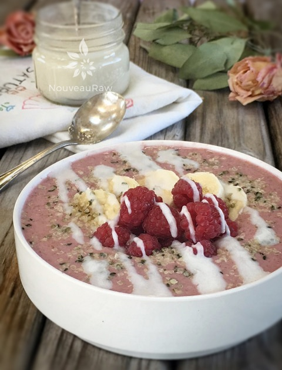
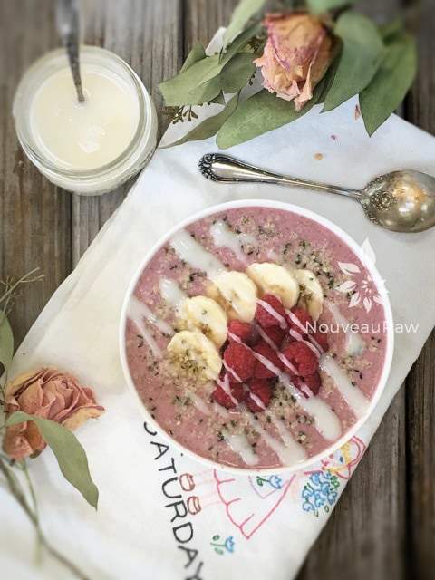

Almond Raspberry Porridge

~ raw, vegan, gluten-free ~
Would it be silly to admit that this breakfast porridge was inspired by a dishtowel? I am afraid that I have to own up to such a thing. If you quickly scroll to the second photo, you will spot a dishtowel featured in the picture.
Growing up, my great-grandmother had dishtowels exactly like the one in the photo. She created one for each day of the week. I remember sliding a chair across the linoleum floor, ear-piercing squeals and all, just so I could pull up beside her to watch her creative-God-given talents at work.
She made them with paint pens and flour sacks. I was in awe, but then everything my great-grandmother did put me in a state of wonderment. When she passed, I had put in a request for some of her towels, but I never got them. For years when I would see similar towels at antique shows, I would instantly be transported back in time… longing to slide that chair up beside her just one last time.
Finally, and I am not sure why it took me so long… I bought myself a set of them at an antique show we went to. It’s funny how a dish towel can evoke such emotion. I consider myself mightily blessed to have had her in my life.
In honor of the reminiscing of my childhood here, I decided to use raspberries as the main fruit, feel free to mix it up. They too bring me fond memories of my time spent at my great grandparents. I specifically remember back when I was, oooh about 11-12 years old, I was visiting my great grandparents, and my little girlfriend, Bonita, and I would ride our bikes all throughout the small town. We had a goal, a challenge, a mission as to who could ride the longest while staying on the tar lines that filled the cracks in the asphalt.
We were easily entertained, what can I say. This particular day I lost because I was mesmerized by a beautiful raspberry bush that was situated behind the local clinic. I peddled over near the bush, looked in all directions, and positioned myself on the ground behind it. I then proceeded to eat my fill of fresh raspberries. By the end of my summer stay, I had those bushes stripped clean. “I am sorry little clinic, it was me! I confess!” :) Ah, I love those childhood memories.
Ok, I have rambled on enough about my childhood days… the bottom line is that this porridge is not only easy to make, but filling, and will give you a good dose of nutrients. You can make it as needed or even make it up the night before so it is ready and waiting for you in the morning. I do hope you enjoy the simplicity of this recipe. Blessings, amie sue
yields 2 cups
- 1/3 cup raw gluten-free oats, soaked
- 1 cup almond milk or water
- 3/4 cup raspberries (1/2 blended, 1/4 for topping)
- 1 Tbsp chia seeds
- 1/2 banana
- 1 scoop protein Powder, or your favorite protein powder
- 1 Tbsp raw almond butter
- 3 dates, pitted
Topping ideas:
- Crushed nuts
- Fresh whole raspberries, banana
- Hemp seeds
Preparation:
- After the oats are done soaking, drain and rinse them for a few minutes under cool water. Hand squeeze the excess water from them.
- In a blender combine the oats, milk, raspberries, chia seeds, banana, and protein powder. Blend until smooth. Pour into 1-2 serving bowls. Depends on how hungry you are.
- Set aside while you prepare for the day, allowing the chia seeds to activate and thicken. You can even let it sit overnight if you have hectic mornings and want breakfast ready and waiting for you.
- When ready to eat add the toppings and enjoy.
The Institute of Culinary Ingredients™
- Dates are an amazing ingredient for raw food recipes, click (here) to read why.
- Hemp seeds don’t require soaking. Click (here) to learn more.
- Learn how to make your own raw almond butter by clicking (here).
- Are oats gluten-free? Yes, read more about that (here).
- Are oats raw? Yes, they can be found. Click (here) to learn more.
- Do I need to soak oats? Not required but recommended. Click (here) to see why.


© AmieSue.com